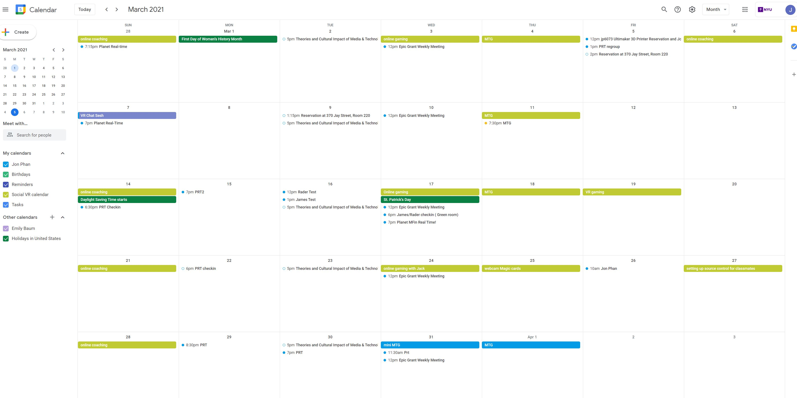

Week 8 Building the server
Social Calendar
 For my virtual socializing this week, I had to cut down a ton. I was so busy working on homework and getting the server up and running that I only had time to do my weekly web cam card games which I still look forward to each week.home
while (!deck.isInOrder()) {
print 'Iteration ' + i;
deck.shuffle();
i++;
}
print 'It took ' + i + ' iterations to sort the deck.';